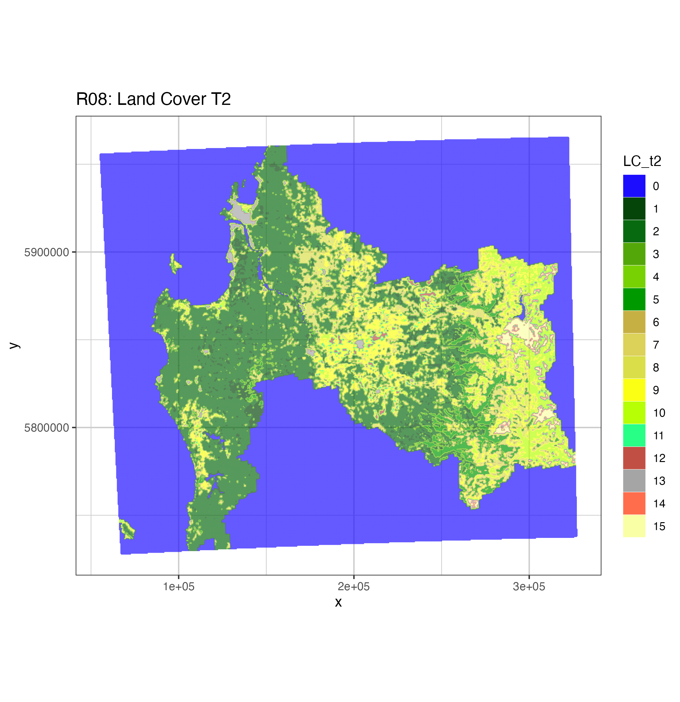

| Value | Color | Description |
|---|---|---|
| 0 | #1c0dff | Water Bodies: at least 60% of area is covered by permanent water bodies. |
| 1 | #05450a | Evergreen Needleleaf Forests: dominated by evergreen conifer trees (canopy >2m). Tree cover >60%. |
| 2 | #086a10 | Evergreen Broadleaf Forests: dominated by evergreen broadleaf and palmate trees (canopy >2m). Tree cover >60%. |
| 3 | #54a708 | Deciduous Needleleaf Forests: dominated by deciduous needleleaf (larch) trees (canopy >2m). Tree cover >60%. |
| 4 | #78d203 | Deciduous Broadleaf Forests: dominated by deciduous broadleaf trees (canopy >2m). Tree cover >60%. |
| 5 | #009900 | Mixed Forests: dominated by neither deciduous nor evergreen (40-60% of each) tree type (canopy >2m). Tree cover >60%. |
| 6 | #c6b044 | Closed Shrublands: dominated by woody perennials (1-2m height) >60% cover. |
| 7 | #dcd159 | Open Shrublands: dominated by woody perennials (1-2m height) 10-60% cover. |
| 8 | #dade48 | Woody Savannas: tree cover 30-60% (canopy >2m). |
| 9 | #fbff13 | Savannas: tree cover 10-30% (canopy >2m). |
| 10 | #b6ff05 | Grasslands: dominated by herbaceous annuals ( |
| 11 | #27ff87 | Permanent Wetlands: permanently inundated lands with 30-60% water cover and >10% vegetated cover. |
| 12 | #c24f44 | Croplands: at least 60% of area is cultivated cropland. |
| 13 | #a5a5a5 | Urban and Built-up Lands: at least 30% impervious surface area including building materials, asphalt and vehicles. |
| 14 | #ff6d4c | Cropland/Natural Vegetation Mosaics: mosaics of small-scale cultivation 40-60% with natural tree, shrub, or herbaceous vegetation. |
| 15 | #f9ffa4 | Non-Vegetated Lands: at least 60% of area is non-vegetated barren (sand, rock, soil) or permanent snow and ice with less than 10% vegetation. |
6 Cobertura de Suelo
Datos Satelitales
6.1 Introdución
Para el caso de estudio se necesita contar con una capa de cobertura de suelo correspondiente al año 2016 de acuerdo a la estimación de población basada en viviendas ruraresl del precenso 2016, por tal motivo se procedió a adquirir el producto de datos MCD12Q1.061 MODIS Land Cover Type Yearly Global 500m del Moderate Resolution Imaging Spectroradiometer (MODIS) combinando Terra y Aqua proporciona cobertura terrestre a intervalos anuales a nivel global. El producto de datos MCD12Q1 Versión 6.1 se obtiene mediante clasificaciones supervisadas de los datos de reflectancia MODIS Terra y Aqua.
6.2 Producto de Datos
Los tipos de cobertura terrestre se derivan de diferentes esquemas de clasificación del Programa Internacional de la Geosfera y la Biosfera (IGBP), el Índice de Superficie Foliar (LAI) de la Universidad de Maryland (UMD), los Ciclos Biogeoquímicos BIOME (BGC) y los Tipos Funcionales de Plantas (PFT). A continuación, las clasificaciones supervisadas se sometieron a un postprocesamiento adicional que incorporaba conocimientos previos e información auxiliar para refinar aún más las clases específicas. El Sistema de Clasificación de la Cubierta Terrestre (LCCS) de la Organización de las Naciones Unidas para la Agricultura y la Alimentación (FAO) proporciona capas adicionales de evaluación de las propiedades de la cubierta terrestre para la cubierta terrestre, el uso del suelo y la hidrología de superficie.
Para el caso de estudio se utilizará “Land Cover Type 2: Annual University of Maryland (UMD) classification”, que como su nombre lo indica es un tipo de clasificación de uso de suelo anual realizada por la Universidad de Maryland de acuerdo al estudio de referencia Falchetta et al. (2019)
6.3 Categorías Clasificadas
Las categorias de uso de suelo clasificadas son las se encuentran en la siguiente tabla:
6.4 Visualización de Resultados Landcover T2
Se realizó un proceso de adquisión de datos de cobertura de uso de suelo, filtrándose por región de estudio y año, para luego transformar para entregar un resultado en formato correcto, lo cual quedó registrado en la Section B.3.
